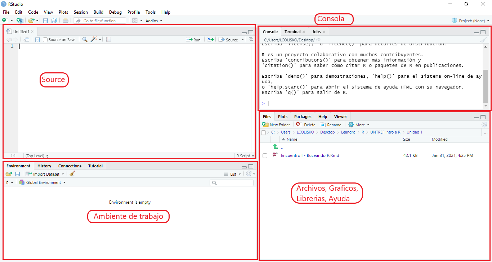

RBASE
Nuestras vidas se encuentran atravesadas por la generación de datos: votar, tomar un transporte público, responder una encuesta, usar una aplicación en nuestros celulares o relevar información en la aplicación de una política pública. En las sociedades actuales, se convierte en una necesidad el desarrollo de perfiles técnicos, que conozcan herramientas para procesar, transformar, analizar y visualizar información. Organizaciones públicas y privadas están avanzando en la construcción de áreas especializadas en estas tareas. De la misma manera, en el ámbito académico emergen numerosos trabajos que recurren a estos softwares.
Por estos motivos comenzamos a pensar en el desarrollo de este sitio web. Lo entendemos como un aporte para intentar contagiar un poco del entusiasmo con el que nosotros empezamos a utilizar estas herramientas. Es una satisfacción profesional, brindar algunas herramientas para que cada une de ustedes se puedan sumergir en este tipo de softwares y logré construir nuevas aptitudes técnicas para la inserción en el mercado de trabajo.
CONTENIDOS
1. Primer acercamiento
1.1. ¿Por qué R?
1.2. Instalación
1.3. Conociendo la interfaz
1.4. Flujo de trabajo: disperso vs integrado
1.5. La piedra fundacional: el directorio
1.6. Todo es un objeto
1.7. Operadores
1.8. Tipos de de datos
1.9. Funciones
1.10. Bibliotecas
2. Primer Proyecto
PRIMER ACERCAMIENTO
1.1. ¿POR QUÉ R
R es un lenguaje de programación orientado al análisis estadístico, que nos permite dar indicaciones dentro de un software, para el procesamiento y la visualización de datos. Esto favorece la apertura de nuevos horizontes y desafíos en la construcción de análisis y modelados de datos. R es un desarrollo de Software Libre y es gratuito, es decir que cualquier persona puede descargar R para trabajar. De esta manera, nos libramos de la agobiante tarea de buscar esa versión crackeada del software que necesitamos o de pagar una licencia con precios exorbitantes.
También, es una puerta de entrada a la programación. Salir de la costumbre de encontrar y usar botones como hacemos en Excel o en SPSS y comenzar a escribir las instrucciones nos abre un mundo de posibilidades y libertades. Entre las que podemos mencionar: nos permite un ahorro significativo de tiempo al independizarnos de tareas rutinarias (que hacemos una y otra vez), escribir una vez y ejecutar cuando y cuantas veces queramos e ir hacia un flujo de trabajo integrado. Por todo esto elegimos R y muchas otras razones.
1.2. INSTALACIÓN
A continuación, presentamos un instructivo, con el paso a paso de la instalación de R y Rstudio. Pero, ¿son dos programas?. Sí. Primero, descargamos y ejecutamos el instalador de R. Este primer programa es la base sobre la que funciona RStudio. A modo de síntesis, R es el lenguaje (o el motor de un auto), RStudio la carcasa (con todas sus comodidades). Este último programa es un entorno de desarrollo integrado (IDE) para el lenguaje de programación R. Este entorno incluye: una consola, editor de script, gestión del espacio de trabajo, entre otras muchas ventajas.
Instructivo R y RStudio by Flavio Scargiali
1.3. CONOCIENDO LA INTERFAZ
RStudio es un entorno de desarrollo integrado (IDE) para R, no es el único, pero es el más usado (y la verdad que es muy completo). La interfaz se compone esencialmente de 4 ventanas o paneles:
- Source: aquí abrimos los distintos tipos de archivos para escribir nuestras instrucciones y programas. El más común es el script de R, que no es más que una especie de bloc de notas que nos reconoce las palabras reservadas de R y nos ayuda a escribir con autocompletado y mucho más.
- Console: es donde se ejecuta las instrucciones y donde visualizamos los el estado del procesamiento de las mismas
- Environment: fundamental, acá vemos todos los objetos que vamos creando.
- Panel: en donde vemos, los archivos, gráficos, bibliotecas, ayudas y visualizador de objetos del tipo web.
Por otro lado, en la barra superior encontramos un montón de ayudas y herramientas que nos permiten personalizar RStudio (y que nos hacen la vida un poco más fácil).

1.4. FLUJO DE TRABAJO: DISPERSO VS INTEGRADO
En general, nos desmienten si no corresponde, el flujo de trabajo tradicional para cargar, transformar, visualizar y presentar nuestros resultados es super engorroso, involucra varios programas y tiene un componente manual muy importante, el Ctrl + C y Ctrl + V. Es lo que más aplicamos en este flujo. Esto genera varios problemas, se pierde la trazabilidad del dato y si tenemos que replicar el trabajo es tarea de experto en rompecabezas: hay que unir los pedazos haciendo malabares. Por el contrario R, en conjunto con Rstudio, facilitan mucho la vida porque en el mismo software: leemos los archivos, los transformamos, creamos visualizaciones y compartimos los resultados. Compartimos una imagen para reforzar este punto.

A lo largo de las guías, van a poder ir observando como en R se integra el proceso de trabajo de punta a punta evitando recurrir a diferentes softwares.
1.5. LA PIEDRA FUNDACIONAL: EL DIRECTORIO
Una ley universal en este mundo: el primer error que vamos a encontrar es consecuencia de que no definimos correctamente el directorio de trabajo. ¿Qué es eso? Simple, es la carpeta desde donde R parte para buscar los archivos que necesitemos. Esto es parte esencial del flujo de trabajo. Para eso, contamos con dos funciones básicas.
# Obtener el directorio de trabajo
getwd()
Corriendo esta función vamos a saber dónde está R en ese momento y si lo queremos modificar, para establecer un nuevo punto lo hacemos otra función:
# Setear el directorio de trabajo
setwd("C:/Users/colis/Desktop")Ahora tenemos el directorio de trabajo en el escritorio (recuerden sustituir la ruta a la carpeta por la de ustedes). Otra opción muy interesante es trabajar con Rproject, una funcionalidad de Rstudio, que nos permite encapsular el directorio. De esta forma definimos la carpeta donde vamos a crear el proyecto y ya está. Ahora cada vez que abran el proyecto RStudio ubica el directorio de trabaja en el mismo lugar que lo definieron.
Una práctica habitual cuando trabajamos con R es comenzar por crear una carpeta donde guardamos todos los materiales de trabajo y en ella crear el Proyecto de R. Un tip de buena práctica es crear tres carpetas, que en cualquier trabajo van a estar presentes, datos, scripts, y resultados.
1.6. TODO ES UN OBJETO
Cualquier cosa que existe en R y que tiene un nombre es un OBJETO: gráficos, números, vectores, funciones, secuencias, bases de datos, etc. Pero vayamos a un ejemplo práctico concreto. Vamos a crear nuestro primer objeto: uno que se llame “weber” y que contenga la frase “Clásico de la sociología”. Para las/los que vienen de otros campos disciplinarios aclaramos que, como vamos a usarlos en otros ejercicios, Weber, Durkheim y Marx son los intelectuales fundadores de la Sociología.
Dos puntos muy importantes: R es sensible a los signos de puntuación, las mayúsculas y las minúsculas. A lo Paulina Cocina: “escriban a lo pelado”. Por ejemplo, weber sin mayúscula (sabemos que es un nombre propio). Seguramente a muchas/os de ustedes (nos pasó) les están sangrando los ojos, pero facilita un montón de cosas y les aseguramos que evitan otro montón de errores. Principalmente se aplica esta recomendación en los nombres de los objetos. Pero lo vamos a ir viendo paso a paso. No se preocupen.
#Todo es un objeto en R
weber <- "Clásico de la Sociología"
weber## [1] "Clásico de la Sociología"
De manera sencilla, lo que realizamos utilizando el operador <- es asignar “Clásico de la Sociología” a weber. Cuando escribimos weber y corremos el código, la consola de RStudio nos devuelve “Clásico de la Sociología”.
1.7. OPERADORES
Vamos a introducirnos en los operadores básicos. Seguramente sean muy conocidos por ustedes. Pero experimentemos para que quede claro su uso.
| Operadores Comparación | Operadores Arirmeticos | Operadores Lógicos | |
|---|---|---|---|
> Mayor |
+ Suma |
! Negación |
|
>= Mayor o igual |
- Resta |
| O lógico |
|
< Menor |
* Multiplicación |
& Y lógico |
|
<= Menor o igual |
/ División |
||
== Igual |
^ Portencia |
||
!= Diferente |
|||
1.7.1. Operadores de comparación
Los operadores de comparación generan un resultado a partir de que se cumpla o no una condición. Por ejemplo, queremos saber si Weber es igual a Marx. Recuerden que a Weber le asignamos la frase “Clásico de la Sociología”. Ahora creamos otro objeto que se llama Marx y le asignamos también “Clásico de la Sociología”. Posteriormente, pedimos que compare a Weber y a Marx para evaluar si son iguales.
#¿Marx igual a Weber?
marx <- "Clásico de la Sociología"
marx == weber## [1] TRUE
Magia. Cuando comparamos a través del == (igual) a Marx y a Weber, nos devuelve TRUE. En pocas palabras, efectivamente Marx y Weber, que son objetos que nosotros construimos, son iguales. Pero, ¿por qué? ¿Recuerdan que a los dos les asignamos la frase “Clásico de la Sociología”?. ¿Qué sucede con el operador lógico?= (diferente de)? Veamos:
#¿Marx diferente a Weber?
marx!=weber## [1] FALSEDespués de correr el código, nos está diciendo, a pedido nuestro (esto es muy importante: no hay nada que R corra si nosotras/os no lo indicamos), que Marx y Weber no son diferentes (FALSE). Recuerden que, lo que comparamos es la asignación que hicimos “Clásicos de la Sociología”. Veamos que sucede con (tediosos pero muy útiles) > o <. Construimos dos nuevos objetos: uno el año de nacimiento de Marx y otro el año de nacimiento de Weber. Y la pregunta a la que queremos generar una respuesta es: ¿Quién nació antes?
#Años de nacimiento de Weber y Marx
nacimiento_ano_weber <- 1864
nacimiento_ano_marx <- 1818
#Comparación Nacimiento
nacimiento_ano_weber > nacimiento_ano_marx## [1] TRUEnacimiento_ano_weber<nacimiento_ano_marx## [1] FALSELa comparación resultó que Weber nació después de Marx. Simplemente, porque 1864 es mayor (>) a 1818 que es el año de nacimiento de Marx. Por esto, la primera comparación nos devolvió TRUE (Weber nació después de Marx) y la segunda FALSE (Weber nació antes que Marx). A los operadores lógicos menor y mayor se los puede combinar con el igual <=(igual o menor)/>=(igual o mayor). Esto quiere decir que se incluye el valor en la condición. Por ejemplo, si decimos > a 4 no incluimos el 4, pero si decimos >= incluimos el 4.
Parece tediosa esta parte, pero está muy relacionada con la lógica de funcionamiento de R. Y ahora en serio: sirven y mucho.
1.7.2. Operadores aritméticos
Este tipo de operadores, los usamos todo el tiempo en nuestra vida cotidiana: sumamos, restamos, dividimos, multiplicamos, etc. R lo que hace es funcionar como una calculadora. Veamos cómo funcionan.:
#Suma
2+2## [1] 4#Resta
2-2## [1] 0#División
2/2## [1] 1#Múltiplicación
2*2## [1] 4#Potencia
2^2## [1] 4Veamos un ejemplo con un poco más de complejidad. Imagínense que son profesores y quieren sumar un punto más a todas/os las/los alumnos por su buen desenvolvimiento en las prácticas. Y lo quieren hacer de manera rápida. Para esto, arman un objeto que se llama notas_alumnes. En este objeto, ponen las calificaciones de las y los alumnas/os (8, 7, 8, 9, 8) y suman un punto más a cada nota. Veamos cómo se hace en R:
#Suma de un punto a todos los/las alumnas
notas_alumnes <- c(8,7,8,9,8)
notas_alumnes <- notas_alumnes + 1
notas_alumnes## [1] 9 8 9 10 9Después de sumar uno al objeto con las notas de los alumnes, nos devuelve todos los valores con un punto más. No queremos seguir aburriendo con estos operadores. Pero sí, vayan practicando y encontrando la lógica del procesamiento de la información que realiza el software.
1.7.3. Operadores lógicos
Para finalizar con los operadores más comunes, presentamos los operadores lógicos. Estos nos ayudan a evaluar una o más expresiones lógicas, es decir, los datos FALSE y TRUE. Bajemos a tierra con unos ejemplos:
#Negación
!(marx==weber)## [1] FALSE# Utilizamos el comparador y los lógicos
# Lo leemos como: marx es igual a weber Ó el nacimiento de ambos es igual
(marx==weber) | (nacimiento_ano_weber == nacimiento_ano_marx)## [1] TRUE# Utilizamos el comarador o lógicos
# Lo leemos como: marx es igual a weber y el nacimiento de ambos es igual
(marx==weber) & (nacimiento_ano_weber == nacimiento_ano_marx)## [1] FALSEHabíamos visto cómo utilizar los operadores de comparación marx y weber, el resultado era verdadero porque ambos objetos los definimos como ‘Clásicos de la Sociología’. Entonces utilizamos el operador negación, como consecuencia el TRUE se convierte en FALSE. Luego utilizamos los operadores | o lógicos e & y lógicos. Para evaluar dos expresiones de verdadero o falso. Por supuesto que estos ejemplos son de juguetes, pero van a ser claves en la medida que nos vayamos profundizando en este lenguaje.
1.8. TIPOS DE DATOS
Con los ejemplos que estuvimos viendo hasta el momento nos encontramos con tres tipos de datos esenciales. Los de texto, los numéricos y los booleanos o lógicos. Para saber qué clase de dato o de variable estamos usando aplicamos la función class()
class(marx) ## [1] "character"class(nacimiento_ano_weber)## [1] "numeric"compara <- marx==weber
class(compara)## [1] "logical"
Hicimos una variable que se llama compara que toma el valor TRUE porque, como habíamos visto antes es igual. De los numéricos, se desprenden otros tipos, pueden ser enteros como también tener decimales, dando nacimiento a los tipos INTEGER y FLOAT. Por último, mencionemos un tipo especial de dato, los FACTOR. Son un tipo particular de datos de texto, la diferencia es que le podemos otorgar un orden particular, lo cual es muy útil para trabajar con variables ordinales. Por ejemplo, una aplicación clara puede ser la respuesta de una encuesta cuyas opciones son: Muy bueno, bueno, regular, malo, muy malo. Las posibles respuestas son texto, pero sabemos que tienen un orden.
1.9. FUNCIONES
Las funciones son instrucciones (acciones) predefinidas, a la que se les asigna un nombre. Aceptan argumentos, es decir, especificaciones sobre cómo deben funcionar. Ejemplo de funciones: mean(), sd(), filter(), etc. Toman valores de entrada y nos devuelve un resultado. Hay un montón de funciones (miles y miles) que previamente un/a programador/a diseñó y están disponibles para que nosotros/as las usemos. En R todo lo hacemos con funciones, y es muy difícil que no encontremos lo que necesitamos. En general tenemos el problema contrario, todo se puede hacer de múltiples maneras. “ En R todo lo hacemos con funciones, y es muy difícil que no encontremos lo que necesitamos. En general tenemos el problema contrario, todo se puede hacer de múltiples maneras.”
Lo mágico de R, es que en caso de que no encontremos lo que necesitamos o queremos algo que se adapte a nuestras necesidades, podemos definir nuestras propias funciones. Esto lo vamos a dejar para más adelante, pero está bueno mencionarlo, porque es el verdadero diferencial que nos ofrece R.
Retomemos nuestro objeto notas_alumnes para indagar sobre las estadísticas básicas. Para esto, utilizamos las funciones: mean(), sum(), median(), sd() var() y quantile(). Notemos que, en todos los casos, entre paréntesis definimos el objeto al que queremos aplicarle el cálculo, como primer argumento. Además, en el caso del percentil utilizamos la (,) para separar los argumentos y pasamos 0.90 al argumento probs para que nos del percentil 90.
#Promedio del curso
mean(notas_alumnes)## [1] 9#Suma de las notas
sum(notas_alumnes)## [1] 45#Mediana
median(notas_alumnes)## [1] 9#Desvío estándar
sd(notas_alumnes)## [1] 0.7071068#Varianza
var(notas_alumnes)## [1] 0.5#Percentil 90
quantile(notas_alumnes, probs = 0.90)## 90%
## 9.6
¿Qué pasa si hacemos notas_alumnes/5? Si nosotros indicamos que haga notas_alumnes/5, el programa entiende que tiene que dividir cada una de las notas de los alumnos por 5. Por esto es importante conocer la lógica de funcionamiento. Este comentario también, lo hacemos extensivo a cualquier software estadístico que utilicen.
1.10. BIBLIOTECAS
Además de las funciones básicas que tiene R (se conoce como R base), se pueden instalar bibliotecas que agrupan un conjunto de diferentes funciones que favorecen algún área de la transformación y visualización de la información. Por ejemplo, el paquete ggplot2 tiene un conjunto de funciones relacionadas con las representaciones gráficas. Otro ejemplo es dplyr que es un conjunto de funciones vinculadas a la manipulación de los datos. A modo de síntesis, una biblioteca o library contiene un conjunto de funciones que en su agrupamiento responde a una necesidad del procesamiento, la visualización, modelización y/o transformación de datos, elaboración de informes, etc. En R, los paquetes se instalan con la función install.packages() y se los activa con library(). Sin instalar, no tendremos las bibliotecas en nuestra computadora; y sin activarlo, no tendremos disponibles las funciones de la librería cuando estemos trabajando. En este curso utilizamos muchos paquetes, de ellos los tres paquetes principales son: tidyverse, simple features (sf) y EPH.
La comunidad de R actualiza y/o construye permanentemente paquetes con nuevas funcionalidades. En los próximos encuentros, vamos a mostrar algunos ejemplos. Por ahora, creemos que es suficiente. Un párrafo aparte merece tidyverse, no es una biblioteca, sino que es un conjunto de ellas. Más que eso, podríamos decir que es un paradigma de programación en R, que nos permite realizar acciones de una manera mucho más intuitiva que con R base. Al ser un conjunto de bibliotecas abarcan mucho de lo que necesitamos. Son parte de tidyverse las ya mencionadas ggplot2 y dplyr, además encontramos tidyr, haven, stringr, lubridate, forecast, tidymodel y más. No es la intención de esta introducción verlas todas, pero sí que sepan que existen y que pueden recurrir a ellas para resolver problemas con los que se topen.A continuación, les dejamos alguno de los paquetes que usaremos en el curso:
install.packages(c("tidyverse", "eph", "sf",
"funModeling", "readxl"))